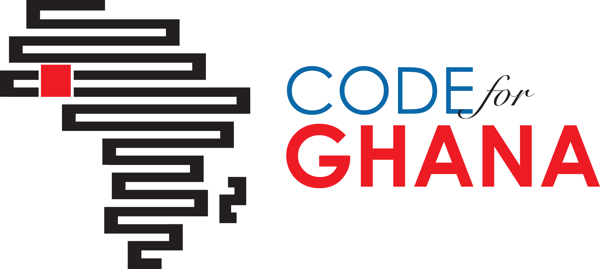

They promise to change the power dynamics that govern our societies, giving ordinary citizens more and deeper information in real time, along with digital tools for engaging with fellow citizens and with those in positions of power.
So, why are so few citizens using either the data or the tools -- despite generous funding and massive institutional support?
The problem, Code for Africa believes, is an issue of supply versus demand. Much of the focus by the civic technology movement to date has been on governments and activists pushing data and services at citizens, rather than listening to what citizens really want or need. This tension is reflected in how we define the movement:
civ·ic /ˈsivik/ Adjective
1. Of or relating to a city or town, esp. its administration; municipal.
2. Of or relating to the duties or activities of people in relation to their town, city, or local area.
Most open data and civic technology initiatives focus on the first definition. They are government or activist / lobbyist led initiatives designed to strengthen government, to improve the quality of services provided to citizens.
Code for Africa seeks a different path. It embraces the second definition, framing itself as a people-driven movement that aims to empower active citizenry and strengthen civic watchdogs to help government shape and improve its services to citizens.
This approach is reflected in how Code for Africa is designed: the initiative is driven and co-funded by grassroots citizen organizations and the mass media and is focused primarily on building civic technology capacity within civil society and the watchdog media. Here is a quick overview of Code for Africa's current activities and priorities:
Some of Code for Africa's flagship programs include:
Unlike North America or Europe, there is little open data freely available in Africa. And, where it is available, government data is often incomplete or skewed. A priority for Code for Africa is therefore to digitize and liberate data, turning 'deadwood' paper archives into a digital resource, or building APIs to access existing data. This includes going beyond government data, by hosting DataLiberation Scraperthons or supporting scraping projects such as sourceAFRICA, to unlock the knowledge held in academia, the media, civil society, and citizen groups.
Data is meaningless if no-one knows how to use it. Code for Africa therefore brings together pioneers who are already supporting data training, ranging from large institutional partners such as the World Bank, to industry associations such as the African Media Initiative, trend-setting corporates such as Google, and grassroots user-groups such as Hacks/Hackers to synchronize and amplify their programs. The partnerships includes evening seminars, more intensive policy roundtables, weeklong skills bootcamps, advanced masterclasses, and Code4Democracy hackathons.
Even once people have skills and data, it is still difficult to get organizations to change the way they operate. Code for Africa therefore embeds change agents, as Data Fellows, in thought-leader media and civil society organizations. These Data Fellows serve as catalysts and enablers who help create the internal systems and resources necessary to entrench data as 'mission critical'. The fellowships are supported by external civic technology labs, and run for between six and 12 months. Each fellow builds proof-of-concept services / apps, and helps to develop internal policy, data platforms, and recruitment / staff strategies.
The best way to convince people about the power and relevance of data, is to point them to some showcase tools or services that demonstrate pragmatic potential. Code for Africa therefore supports the development of citizen-driven solutions, such as the GotToVote toolkit that has already been used in Kenya, Malawi & Zimbabwe, or the actNOW and askAFRICA projects in Ghana and South Africa. But, there is a real danger that scarce resources are wasted reinventing the wheel. Code for Africa therefore champions re-use and replication wherever appropriate, by supporting the work of pioneers such as mySociety and Open Knowledge Foundation and others.
The continent is made up of one billion people living in 54 nations with wide variation in economic and government systems, with further differentiation by language, religion, and shared history. Code for Africa is therefore a 'federated' umbrella for a series of national and/or thematic initiatives, including:



Additional initiatives are being incubated, for launch in 2014, in Morocco, Rwanda, Senegal, Tanzania, Tunisia, and Uganda.
It is important to tie together all the ingenuity, knowledge, and resources being created by the Code for Africa community and their counterparts in the Americas and Europe and Latin America. We are therefore supporting a global effort to strengthen the CivicCommons platform, by helping evolve the project beyond its current life as a simple catalogue into a dynamic community portal.
In addition to working on CivicCommons, Code for Africa is building other shared resources, including the continent's largest repository of open data, openAFRICA plus a repository of 'liberated' documents at sourceAFRICA, and of civic code at codeAFRICA.
Rhetoric is easy. It is what you actually do that counts. Some of the early prototypes that Code for Africa has helped grassroots partners build or deploy include:
Technology should be accessible. Code for Africa therefore bases its teams in public tech hubs or incubators, as CitizenLabs, where citizens or journalists can walk in for help or to share space to build their own projects. Code for Africa's core team works from the Kenyan CitizenLab, at 88mph. Pop in to chat or code with us.
Justin Arenstein
Chief Strategist
Nqobile Sibisi
Program Manager

David Lemayian
Tech Lead
Nick Hargreaves
Developer
Serah Njambi
Developer
Achieving Open Data and Open Government on a continental level is a mammoth task. Code for Africa is therefore deliberately designed as a vehicle for partnerships, to allow for shared knowledge and collaborative solutions, driven by thematic champions and diverse approaches. Code for Africa's founding partners are: